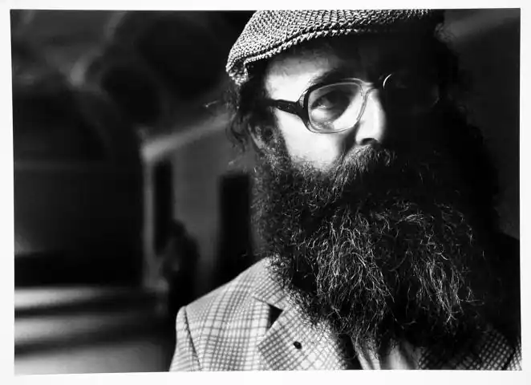
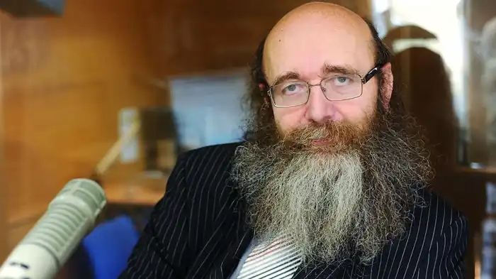

Мартін Петішка — син письменника Едуарда Петішки. Прототип Мартінка з батькового твору Pohádkový dědeček ("Казковий дідусь"). У 1969 році закінчив середню школу в Брандис-над-Лабем-Стара-Болеславі. Ще змалку Мартін міг спостерігати таких батькових приятелів, як письменники Їржі Коларж, Богумил Грабал, Франтішек Грубін, Ярослав Сайферт, Їржі Шлітр, Ян Ґроссман, Емануель Фринта, Йозеф Несвадба, і готуватися до літературної діяльности. Вивчав порівняльне літературознавство і слов'янські мови (зокрема, російську, болгарську та польську) на філософському факультеті Празького університету. Коли з політичних міркувань кафедру порівняльного літературознавства розформували, Мартін Петішка перейшов на кафедру історії та теорії театру, де тоді викладали Франтішек Черни, Мирослав Коуржил і Дана Кальводова, і закінчив курс навчання у 1976 році, написавши дипломну роботу "Ф. К. Шальда — теоретик театру".
Ще в студентські роки Петішка почав писати драматичні твори ("Сини і дочки", "Чорно-білий вечір", "Три японські п'єси про кохання"), прозу та вірші (збірка "Мій Фауст", 1975). Закінчивши навчання, писав як театральні п'єси й сценарії (Дивовижний випадок у дивовижній родині), так і вірші ("Неспалені щоденники", 1980, "Міф про Омара", 1987) та прозові твори (низку книжок у галузі фанатастики започаткувала збірка оповідань "Найбільший скандал в історії людства" (1984, під редакцією Іво Железного).
У 1990-х роках став писати видавати книжки іншого жанру — наприклад, про Прагу, а також про сучасність (збірка оповідань "Татку, чи в чорта такі очі, як у мамці?", контраверсійний роман про клонування Ісуса Христа "Пророк?" з передмовою Йозефа кардинала Шпідліка і роман про велику повінь "Дощ"). І далі писав вірші, які виходили в численних збірках (наприклад, "Сердечні вітання з "Титаніка"". Крім літературної діяльності, Мартін Петішка відомий завдяки своїм зв'язкам у дворянських колах і діяльності в галузі генеалогії. Публікує "Альманах чеських шляхетських родів" (цей проект він реалізував разом із Франтішеком Лобковичем) і "Альманах чеських шляхетських і лицарських родів". З 1996-го випускає у своєму видавництві "Мартін" літературу десятьма мовами. Перевидає твори свого батька, зокрема обробку біблійних історій "Перекази давнього Ізраїлю". Вийшли також спогади Віктора Фішла, який був секретарем Яна Масарика. Для радіо він створив понад 600 робіт різного жанру — від репортажів до радіоспектаклів для дітей ("Великий діамант" про життя мандрівників Еміля Голуба і Ченка Пацлта, а також "Хмара і меч" про дітей Давнього Риму під час катастрофм в Помпеї). Для редакції радіо "Вільна Європа" Петішка реалізував 160 задумів. Співпрацював з чехословацькими телеканалами та кіностудіями. Письменник працював у редакціях журналів "Good News" (був першим головним редактором цього видання Ротарі-клубу) і "Prostor". Керував найбільшою в Празі приватною картинною галереєю. Мартін Петішка викладав на кафедрі історії та теорії театру і на кафедрі богемістики Карлового університету. Читав лекції в Університеті імені Яна Амоса Коменського.